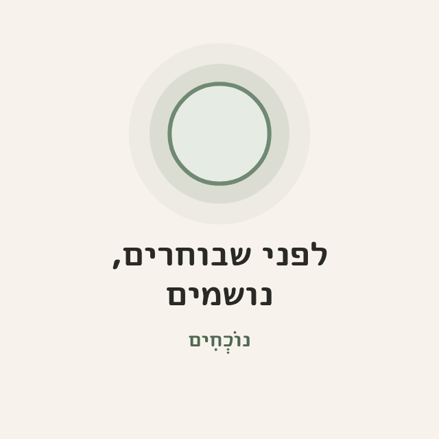

לפתוח מעגל תרגול
לבד קל לדחות. יחד, עשרים דקות של שקט הופכות לרגע שזוכרים.
מעגל הוא כמה אנשים שיושבים זה לצד זה, נושמים, מאזינים למדיטציה, ומשתפים במילה או שתיים. גם מי שחושבים אחרת. לא צריך ניסיון בהנחיה: הערכה הזו, ומדיטציה מוקלטת, מספיקות.
שלושה צעדים לפתיחת מעגל
לבחור מקום
- ממליצים בחום על מקום ציבורי ופתוח: גינה, פארק, דשא ליד ספרייה, חוף.
- בבית פרטי: על אחריותך. עדיף לפרסם נקודה כללית ולתת את הכתובת רק למי שפונה.
- שקט יחסית, עם צל או קורת גג.
- הרחק מקלפיות, ובמיוחד ביום הבחירות.
- נגיש: שביל ישר, ספסלים למי שלא יושב על הקרקע.
לבחור זמן
- ביום הבחירות, 27.10. זה היום שבו הכי מקווים להרבה מעגלים. הבוקר הוא הכי מתאים: "נושמים ויוצאים להצביע". אבל אפשר בכל שעה שהקלפיות פתוחות.
- חד-פעמי (תאריך ושעה), או כל שבוע עד הבחירות (למשל כל שלישי ב-19:00, עד 27.10 כולל).
- כל מעגל נמשך חצי שעה. זה קבוע, ומספיק בדיוק.
להזמין
המעגל מתמלא מהאנשים שלך. כמה דרכים, ואפשר את כולן:
- אישית: לחברים, לשכנים, למשפחה.
- בקבוצות הוואטסאפ שכבר יש לך: הבניין, השכונה, ההורים בגן ובבית הספר, החוג, העבודה. אם זה מתאים לקבוצה.
- ברשתות: פוסט עם ההזמנה וההאשטאג #לפני_שבוחרים_נושמים, ולתייג חברים מהאזור.
- ברחוב: להדפיס את השלט ולתלות בלוח המודעות השכונתי (אם מותר), ובמקום המעגל ביום עצמו. מי שעובר ליד יכול לסרוק ולהצטרף.
- קבוצת וואטסאפ למעגל: מקום אחד לכל מי שמגיע, מכל הכיוונים. מומלץ, לא חובה.
קבוצת וואטסאפ למעגל
קבוצה אחת שאליה מזמינים מכל מקום: מהרשתות, מהקבוצות המקומיות, ומהשלט ברחוב. שם מעדכנים על המעגל, ושם אפשר להמשיך אחריו. זה לוקח שתי דקות:
- פותחים קבוצה חדשה בוואטסאפ, עם חבר/ה אחד/ת לפחות. כדאי שיהיה/תהיה גם מנהל/ת.
- שם הקבוצה (להעתיק ולהשלים):
מעגל נשימה · [שכונה או יישוב]
- תיאור הקבוצה (להעתיק):
מעגל נשימה לפני הבחירות 🌾
חצי שעה של שקט, מדיטציה קצרה ושיתוף במילה אחת. לא צריך ניסיון. כל מי שגר כאן מוזמן/ת, גם מי שחושב/ת אחרת.
כללי הקבוצה:
• מדברים על המעגל: מתי, איפה, מי מגיע/ה.
• בלי פוליטיקה של מפלגות ומועמדים, ובלי ויכוחים.
• תמונות של אנשים: רק ברשותם.
• בקבוצה כולם רואים את מספרי הטלפון של כולם.
המעגל עצמאי, ומאורגן בהתנדבות בעזרת הערכה של נוֹכְחִים: gevasaf.github.io/mindfulness-action-26 - תמונה לקבוצה:

להורדת התמונה - הגדרות מומלצות: להפעיל "אישור משתתפים חדשים", כי הקישור יופיע על שלט ברחוב. ולאפשר רק למנהלים לערוך את פרטי הקבוצה.
- קישור ההזמנה: בפרטי הקבוצה, "הזמנה באמצעות קישור", ולהעתיק. את הקישור שמים בהזמנה, בפוסט, ובשלט: מדביקים אותו בעמוד השלט, ועל השלט מופיע קוד QR להצטרפות לקבוצה.

חשוב לדעת: בקבוצה כולם רואים את מספרי הטלפון של כולם. זה כתוב בתיאור, וכדאי להגיד את זה גם בהזמנה. מי שלא נוח לו/ה, יכול/ה לתאם איתך בהודעה פרטית.
נוסח הזמנה לשיתוף
מוזמנים למעגל נשימה שקט לפני הבחירות 🌾
[יום ושעה] · [מקום]
חצי שעה של שקט, מדיטציה קצרה ושיתוף במילה אחת. לא צריך ניסיון.
אם יש, אפשר לבוא בלבן.
לא אומרים כאן למי להצביע. רק עוצרים יחד.
להצטרפות לקבוצה של המעגל: [קישור לקבוצה] (או: לתיאום, לכתוב לי בוואטסאפ)
#לפני_שבוחרים_נושמים
כשמישהו פונה אלייך בוואטסאפ
נוסח מוצע לתשובה:
היי, איזה כיף שבאת 🌾
אנחנו נפגשים ב[מקום] ב[יום ושעה], לחצי שעה של נשימה, מדיטציה קצרה ושיתוף במילה אחת. לא צריך ניסיון.
כמה דברים קטנים:
• מדברים מהלב, על חוויות, לא על מפלגות ומועמדים.
• כל מי שגר כאן מוזמן/ת, גם מי שחושב/ת אחרת.
• אם יש, אפשר לבוא בלבן.
נתראה!
מהלך מעגל (30 דקות)
- התכנסות (3 דקות): לשבת במעגל. ברכה קצרה: "תודה שבאתם. אנחנו כאן כדי לעצור יחד. בלי פוליטיקה של מפלגות, רק נוכחות."
- כללים (דקה): "מותר לעצום עיניים או להשאיר פקוחות. מותר לצאת בכל רגע. מה שנאמר כאן נשאר כאן."
- שלוש נשימות יחד (דקה).
- מדיטציה (7 עד 10 דקות): מוקלטת מהאתר, דרך רמקול קטן, או מונחית בקול שלך.
- סבב במילה אחת (4 דקות): "מילה אחת על מה שאני מרגיש/ה עכשיו." מותר לוותר.
- פינת הקשבה (אופציונלי, 5 דקות): בזוגות, כל אחד ואחת מדברים שתי דקות על "מה חשוב לי בתקופה הזו", והשני רק מקשיב.
- סיום (2 דקות): נשימה אחת, תודה, ושלוש הזמנות: "מי שרוצה, אפשר להכין תוכנית הצבעה באתר. דקה אחת.", "מי שרוצה, אפשר לשתף ברשתות, עם #לפני_שבוחרים_נושמים." ו"מי שרוצה, אפשר לפתוח מעגל משלך."
תפקידים
- מנחה/ה: מוביל/ה את המהלך.
- מלווה בעיניים פקוחות: מישהו שלא מתרגל, שומר על המעגל ושם לב לסביבה. בכל מעגל, תמיד.
- צלם/ת (לא חובה): משתתף/ת שאחראי/ת על התמונות, לפי הכללים שלמטה. לא המלווה: העיניים של המלווה על המעגל ועל הסביבה. אפשר לצלם בהתחלה ובסוף, ולשבת לתרגל באמצע.
צילום ופרטיות
- מצלמים מאחור או מרחוק.
- פנים: רק ברשות של כל מי שבתמונה.
- בלי פנים של ילדים.
- לא מפרסמים כתובת של בית פרטי.
- ביום הבחירות לא מצלמים ליד קלפי.
- תמונה טובה: מעגל מרחוק, אור בוקר, ידיים, שמיים.
באים בלבן
מציעים לבוא בלבן: חולצה לבנה, צעיף לבן, מה שיש. זה סימן היכר שקט ופשוט, שלכל אחד יש בארון. לבן בלבד, בלי שילוב עם כחול. זו המלצה ולא חובה. ביום הבחירות, לבוא בלבן למעגל ולא להנחות אנשים לבוא בלבן לקלפי.
בטיחות ואי-אלימות
- פרובוקציה: לא מתווכחים ולא עונים. נשארים לשבת ונושמים. המלווה מדבר/ת בשקט ובאדיבות, ואם צריך מזיזים את המעגל.
- אלימות או איום: מתרחקים, ופונים למשטרה (100). מתעדים רק אם בטוח לעשות את זה.
- מצוקה רגשית במעגל: לפנות בעדינות, להציע מים ומקום שקט, ולהפנות לקווי הסיוע (ער"ן 1201, נט"ל 1-800-363-363).
- מעגל גדול: כשמגיעים יותר מכ-30 אנשים, עדיף לפצל לשני מעגלים.
- אחרי המעגל: לספר על כל אירוע חריג (פרטי הקשר בעמוד על המיזם), כדי ללמוד ממנו.
יום הבחירות (27.10)
- היום החשוב ביותר למעגלים. אם תפתחו רק מעגל אחד, שיהיה ביום הזה.
- הכי מתאים בבוקר: "נושמים ויוצאים להצביע". אפשר גם מאוחר יותר, כל עוד הקלפיות פתוחות.
- הרחק מקלפיות. לא מתכנסים ליד בתי ספר או מקומות שמשמשים כקלפי, ולא מצלמים שם.
- בלי שלטים ובלי חולצות עם מסרים. רק שקט.
- בסוף אפשר להאזין יחד ל"בדרך לקלפי", ולהתפזר.
חומרים
- שלט להדפסה (A4): עם קוד QR לאתר. אם מדביקים בו קישור לקבוצת הוואטסאפ של המעגל, מופיע גם QR גדול להצטרפות לקבוצה.
- דף הנחיה של עמוד אחד: מהלך המעגל, הכללים, התפקידים ומספרי קווי הסיוע.
- הערכה כולה כ-PDF: להורדה ולהעברה בוואטסאפ.
- מדיטציות להורדה: מעמוד המדיטציות.
- רמקול קטן, ומחצלת למי שאין.
אחרי המעגל: להעביר הלאה
מעגל אחד מזמין את הבא. שני דברים קטנים שעוזרים לזה לקרות:
- לשתף ברשתות: תמונה אחת ומשפט על החוויה, עם #לפני_שבוחרים_נושמים וקישור לאתר. רק לפי כללי הצילום.
- להזמין לפתוח מעגל משלהם: לבקש מהמשתתפים לפתוח מעגל בשכונה שלהם, בעבודה או עם המשפחה, ולשלוח להם את הערכה. לא צריך ניסיון, רק מקום, זמן ומדיטציה מוקלטת.
נוסח מוצע לפוסט:
היום ישבנו במעגל נשימה לפני הבחירות 🌾
חצי שעה של שקט, יחד. בלי לדבר על מפלגות, רק לעצור ולנשום.
רוצים לנסות? אפשר לפתוח מעגל משלכם, בכל מקום בארץ:
gevasaf.github.io/mindfulness-action-26
#לפני_שבוחרים_נושמים